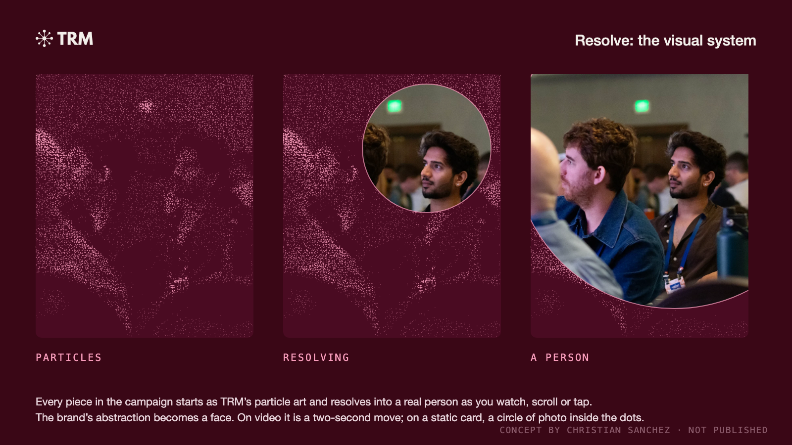
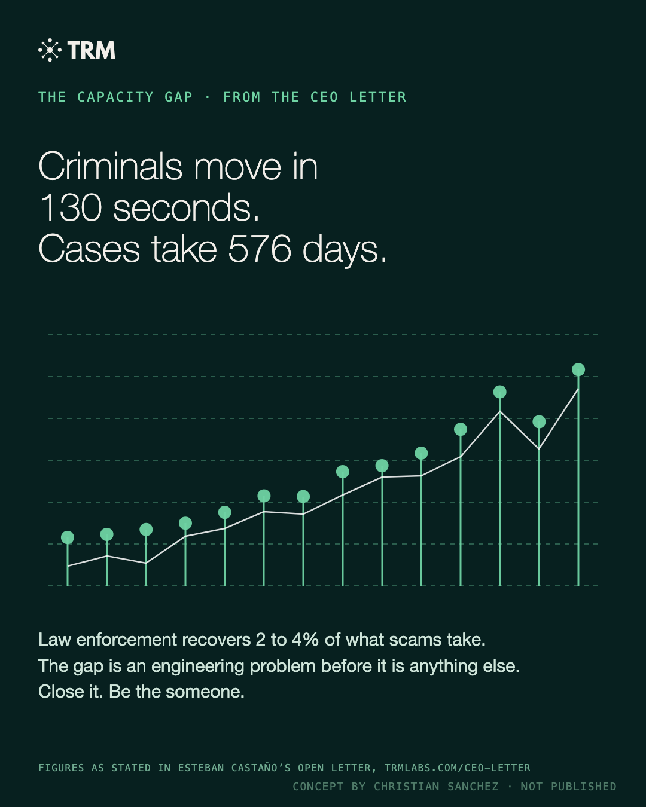
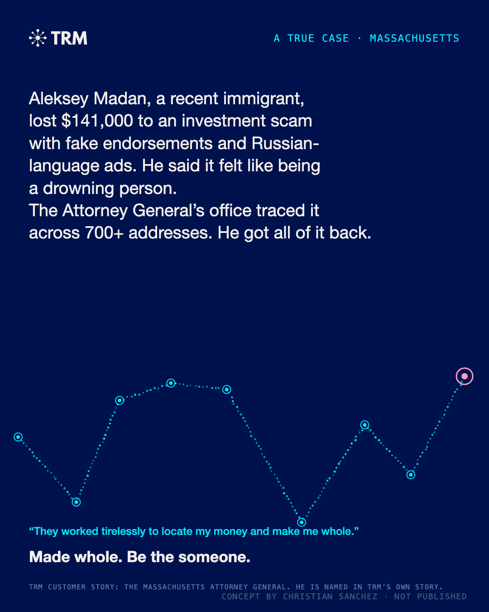
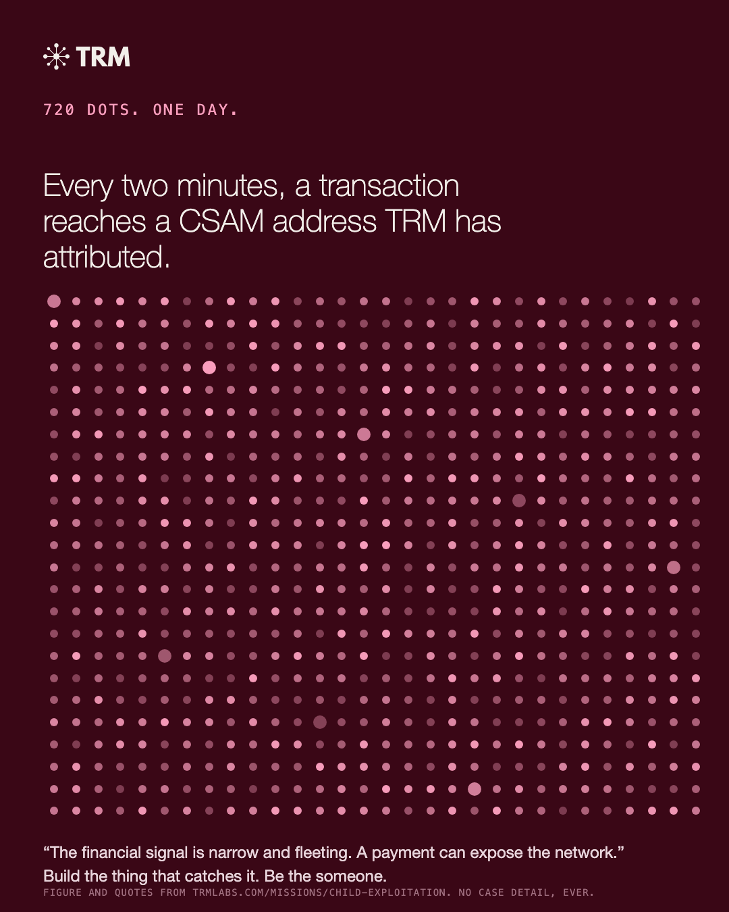
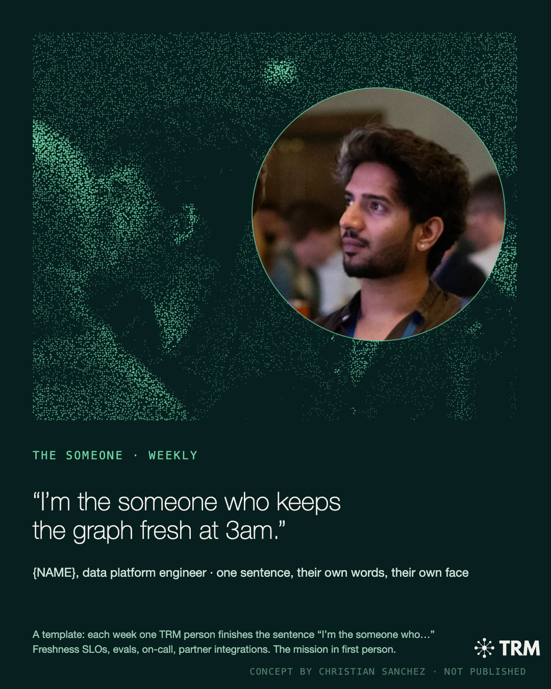
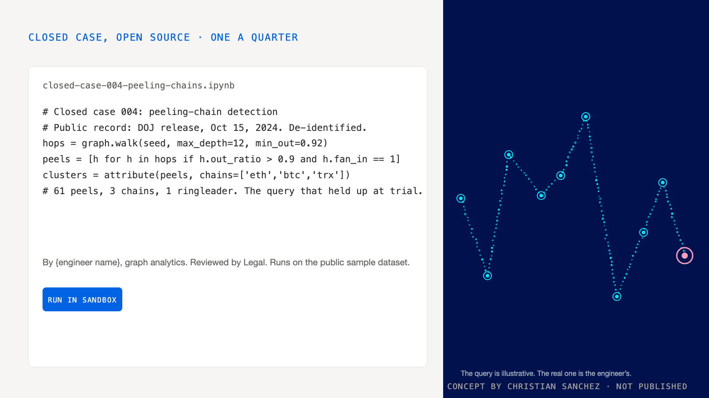
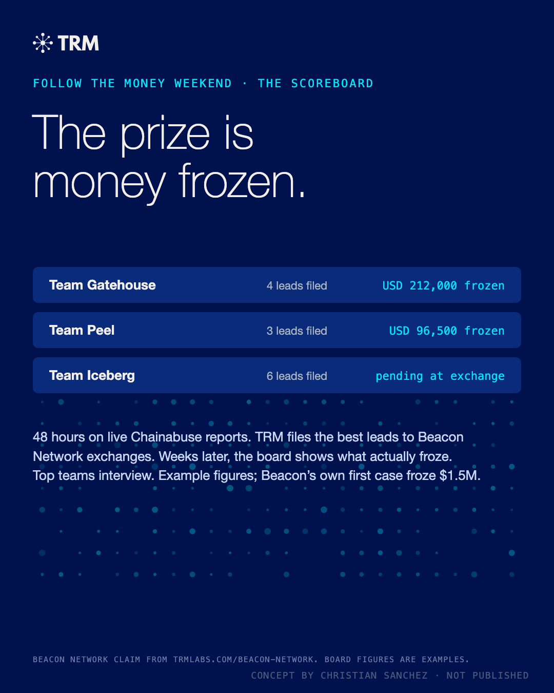
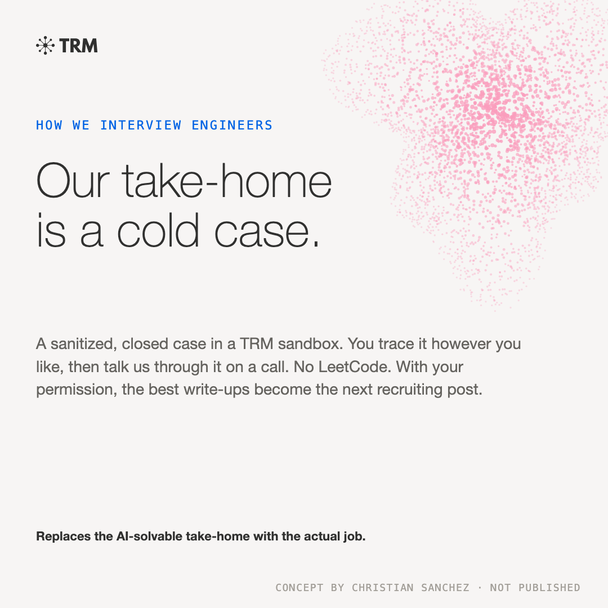
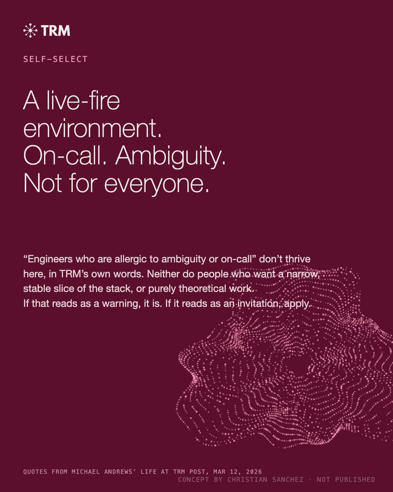

A SIGNAL FOR ENGINEERS
Make TRM the company engineers want to fight crime with.
Esteban told Fortune the $2B valuation was a bat signal for talent. This is the content that carries it.
TRM Talent Content Machine
Prepared for Devin Blase and Laura Yungmeyer, TRM Labs · Draft for discussion · Oct 29, 2026
Make TRM the company engineers want to fight crime with.
You asked for the content machine and flywheel behind TRM's talent brand: what to stop, what to start, the formats and keywords, how AI powers it, and how to measure share of voice. The audience is the talent market, especially engineers at every level who follow hot pre-IPO companies. This plan assumes unlimited budget and turns what TRM already makes into a steady stream that reaches engineers where they read.
- 1SourceOne anchor a week: a TRM Talks episode, a Tech Blog deep dive, a Life at TRM story or a creator video
- 2AtomizeAI marks the moments; an editor shapes each one for the place it will run
- 3AmplifyEngineer voices, the CEO and creators first, then paid behind what works
- 4ConvertAn Engineering at TRM hub, role pages and a talent newsletter, all tracked
- 5LearnShare of voice and AI answers, read every week
What moves engineers goes back into next week's plan
- MissionA mission-driven AI company: the hardest AI problems, pointed at the worst crime
- GrowthSpectacular growth: proof this is a hot pre-IPO company with real upside
- HeroYour work makes you a hero: code that helps stop fraud, terror financing and exploitation
The six rules behind every piece
- TRM's language, not a copy. Art, type and grounds from TRM's own site and feed; one template borrowed as is, the rest new devices.
- Investigators did the work. Engineers built the graph they worked in; no copy implies an engineer caught anyone.
- Closed, public cases only. No children, no live or sealed matters, no victim named unless TRM names them.
- Every number has a source. Quotes verbatim with the timestamp or page; trims and example figures are marked.
- The human element is TRM's own. Ep. 122 guests, Life at TRM authors, the investigators in the stories; the campaign photo is a stand-in.
- AI does the volume, people make the calls. An editor shapes every piece, an engineer checks the claims, Legal sees anything that touches a case.
Where TRM Stands Today
TRM publishes a lot, and almost all of it is written for customers and policy people. The engineering content is strong but reaches few engineers, and the hero stories live in the investigations blog, where engineers rarely look.
The FixAn Engineering at TRM hub with a page per role family. A recruiter kit for each family. The cold-case interview in place of a take-home.
The FixThree talent posts a week beside the news. Engineer voices run as Thought Leader Ads. A LinkedIn Life tab for engineering.
The FixTRM Talks: Build recorded on video. A Shorts feed cut from every episode. The Scammed companion series.
The FixA monthly Build episode with the Tech Blog authors as guests. Every episode cut into ten pieces.
Tech Blog: The Last Ten Posts
Who the Content Is Written For
Engineers hear about TRM's missions, or about TRM's engineering. They almost never hear both in the same piece.
The Tech Blog explains a 400 TB migration without saying what it helps catch. The investigations blog explains a $285M North Korean heist without the engineering behind the trace. Esteban told Fortune the new valuation works as a "bat signal" for talent; this plan is the channel that carries it. Every piece pairs a hard technical problem with the crime it helps stop, under one working line built from TRM's own careers copy: Build the technology that helps crimefighters fight back.
Proof: The Machine, Run on TRM's Own Content1Source2Atomize
Five anchors TRM already made, each cut ten ways, the campaign that carries the human element, and six more ideas in TRM's own language. Pick one; every piece opens full size.
The Campaign: Be the…
TRM's About page says: "We build for a world where every victim can count on someone to help." The campaign makes the engineer that someone. One line, one visual device, and ten pieces that carry the human element the rest of TRM's content leaves out. The device is Resolve: every image begins as TRM's particle art and resolves into a real person as you watch, scroll or tap. The photo is a stand-in candid; TRM's own would replace it, with consent.
Be the someone.
The line every piece lands on.
The blank is the system. Each piece fills it with something an engineer here actually does, with the proof underneath, and the film and the header cycle through them before landing on the one word that comes from TRM's own sentence.









Every quote and number on these cards is from trmlabs.com: the mission page, the CEO letter, the Massachusetts and Coinbase customer stories, the Child Exploitation mission page and the data engineering post. Scoreboard figures and the notebook query are marked as examples on the cards.
One Post, Ten Formats: The Career Move
Devin's own post, "Why Joining TRM Is the Smartest Career Move in Tech Right Now" (Life at TRM, Oct 12, 2026), makes the Growth case: the hiring window, pay for performance, and five questions to ask any company recruiting you. This is the monthly culture series that today runs on boosted LinkedIn ads alone. Cut ten ways, one post covers a month of talent content, and the five questions become a careers FAQ that search engines and AI assistants can quote.
0:007:47
1LinkedIn Post
- AI drafts the post from the opening
- Devin edits in her voice
- Run as a Thought Leader Ad
Devin's LinkedIn, Thought Leader Ad
2Short Vertical
- AI drafts a 30 sec script
- Filmed with Devin
- AI drafts captions
TikTok, Reels, Shorts
3Story
- AI drafts the frames
- Real trip photos, with consent
- Designer finishes it in brand
Instagram, LinkedIn Life tab
4Timing Chart
- AI sketches the curve from the argument
- Designer draws it in brand
LinkedIn, careers page
5Stat Card
- AI pulls the numbers
- Claims check against the post
- Designer sets it in brand
LinkedIn, recruiter InMail
TRM posts stat cards; this one sells the hiring window
6Carousel
- AI turns the list into slides
- Designer lays out six slides
- Posted by the company and Devin
LinkedIn document post
7Shorts Series
- AI drafts five 45 sec scripts
- Devin answers on camera
- One a week, captioned
YouTube Shorts, weekly
8Careers FAQ
- AI drafts answers from the post
- The people team confirms
- Marked up as FAQ
Careers page, search and AI answers
9Recruiter InMail
- AI drafts the opener
- Recruiters personalize
- Linked to the post
LinkedIn Recruiter
10Quote Card
- AI pulls the line
- Designer sets it in brand
LinkedIn, Instagram
AI reads the 8-minute post and marks ten moments.
LinkedIn Post · 0:05 into the read
AI drafts the post from the openingDevin edits in her voiceRun as a Thought Leader Ad
Short Vertical · 3:31 into the read
AI drafts a 30 sec scriptFilmed with DevinAI drafts captions
Story · 4:46 into the read
AI drafts the framesReal trip photos, with consentDesigner finishes it in brand
Timing Chart · 5:20 into the read
AI sketches the curve from the argumentDesigner draws it in brand
Stat Card · 5:38 into the read
AI pulls the numbersClaims check against the postDesigner sets it in brand
Carousel · 6:49 into the read
AI turns the list into slidesDesigner lays out six slidesPosted by the company and Devin
Shorts Series · 7:01 into the read
AI drafts five 45 sec scriptsDevin answers on cameraOne a week, captioned
Careers FAQ · 7:14 into the read
AI drafts answers from the postThe people team confirmsMarked up as FAQ
Recruiter InMail · 7:17 into the read
AI drafts the openerRecruiters personalizeLinked to the post
Quote Card · 7:19 into the read
AI pulls the lineDesigner sets it in brand
Comp and equity lines stay as the post wrote them, with its own caveat that this isn't financial advice. The Northern Lights story uses real trip photos only with consent.
One Episode, Ten Formats
The proof is the episode TRM already made. Ep. 122, "Building Ardence," is the one TRM Talks episode about building TRM's own technology, with Lexie Nappi (Ardence AI evaluations, former US Army Cyber officer) and Simon Warren (Ardence go-to-market, former Australian Special Operations). AI reads the published transcript and marks the moments that stand on their own; an editor cuts each one for the place it will run. Every quote and timestamp is from TRM's own transcript, and the mockups are concepts in TRM's brand. Click any piece to open it.
0:0029:50
1Careers Module
- AI matches the clip to role families
- Editor trims the quote
- Recruiters get one link per family
Careers page, InMail
2Growth Card
- AI pairs the line with public numbers
- Claims check against sources
- Designer finishes it in brand
LinkedIn, recruiter InMail
TRM posts stat cards; this one is the hiring number, for engineers
3LinkedIn Clip
- AI finds and cuts 45 sec
- Editor re-cuts and captions
- AI drafts 3 hooks to test
LinkedIn, Thought Leader Ad
4Carousel
- AI groups four moments into decisions
- An engineer checks accuracy
- Posted by the company and one engineer
LinkedIn, X thread
5Tech Blog Post
- AI outlines from 19:12 to 21:36
- The evals team writes
- Editor adds the hiring link
Tech Blog, Hacker News
6Short Vertical
- AI drafts the 30 sec cut
- Editor re-cuts for pace
- AI drafts captions
TikTok, Reels, Shorts
7Quote Card
- AI pulls the quote and lays out the card
- Designer finishes it in brand
LinkedIn, Instagram
8Story
- AI drafts the frames
- Real photos added, with consent
Instagram, LinkedIn Life tab
9LinkedIn Poll
- AI drafts the question from 22:09
- Editor sets the options
- The comments start the hiring conversation
LinkedIn, company page
10Talent Newsletter
- AI drafts the issue from the month
- Editor edits for voice
Build Notes, monthly
AI reads the 30-minute transcript and marks ten moments.
Careers Module · 5:39 in the episode
AI matches the clip to role familiesEditor trims the quoteRecruiters get one link per family
Growth Card · 6:20 in the episode
AI pairs the line with public numbersClaims check against sourcesDesigner finishes it in brand
LinkedIn Clip · 7:02 in the episode
AI finds and cuts 45 secEditor re-cuts and captionsAI drafts 3 hooks to test
Carousel · 9:08 in the episode
AI groups four moments into decisionsAn engineer checks accuracyPosted by the company and one engineer
Tech Blog Post · 19:12 in the episode
AI outlines from 19:12 to 21:36The evals team writesEditor adds the hiring link
Short Vertical · 20:23 in the episode
AI drafts the 30 sec cutEditor re-cuts for paceAI drafts captions
Quote Card · 23:41 in the episode
AI pulls the quote and lays out the cardDesigner finishes it in brand
Story · 24:49 in the episode
AI drafts the framesReal photos added, with consent
LinkedIn Poll · 22:09 in the episode
AI drafts the question from 22:09Editor sets the optionsThe comments start the hiring conversation
Talent Newsletter · 27:20 in the episode
AI drafts the issue from the monthEditor edits for voice
The waveform shows how much is said in each slice of the 30-minute episode, measured from the transcript. Lexie and Simon aren't engineers, so the next step is the monthly Build episode with the engineering team.
One Case, Ten Formats: The Coinbase Home-Invasion Ring
The human element, from a customer story. On a Wednesday morning Kristen Spaeth at Coinbase got an email from an FBI agent: an elderly couple attacked in their home and forced at gunpoint to move their crypto. She traced the funds through cross-chain swaps and peeling chains in TRM Forensics, linked them to a nationwide ring, and testified. Fourteen arrests, 232 years in combined sentences, 47 for the ringleader. Retold for the engineers who build the graph, with the investigator always credited for the work.
0:003:31
1Story Card
- AI drafts the card from the opening
- Editor keeps the investigator credited
- A dotted trail runs behind it
LinkedIn, Instagram
Your customer story, retold for the people who build the graph
2Quote Card
- AI pulls the line
- Designer sets it on burgundy
LinkedIn, Instagram
3X Thread
- AI lists what the graph had to do
- An engineer checks the terms
- Posted by the company and an engineer
X, LinkedIn
4Carousel
- AI maps the case into five beats
- Designer lays out the slides
- Last slide hires
LinkedIn document post
5Short Vertical
- AI drafts three beats
- Editor cuts and captions
- No faces, no victims
TikTok, Reels, Shorts
6Stat Card
- AI pulls the numbers
- Claims check against the story
LinkedIn, recruiter InMail
TRM posts stat cards; this one credits the graph, not the sale
7Billboard
- AI drafts ten lines
- Editor picks the one that credits the investigator
- QR to the case
SF and NYC transit
8Story Card
- AI finds the speed line
- Editor writes the engineering turn
- Green ground
LinkedIn, the Engineering hub
Your customer story, turned into a latency budget for engineers
9Recruiter InMail
- AI drafts the opener
- Recruiters personalize
- Linked to the story
LinkedIn Recruiter
10Careers Module
- AI fills the Case Files template
- Legal clears the case
- One per quarter
Careers page, quarterly
AI reads the case and marks ten moments.
Story Card · 0:36 into the read
AI drafts the card from the openingEditor keeps the investigator creditedA dotted trail runs behind it
Quote Card · 0:52 into the read
AI pulls the lineDesigner sets it on burgundy
X Thread · 1:22 into the read
AI lists what the graph had to doAn engineer checks the termsPosted by the company and an engineer
Carousel · 1:35 into the read
AI maps the case into five beatsDesigner lays out the slidesLast slide hires
Short Vertical · 1:51 into the read
AI drafts three beatsEditor cuts and captionsNo faces, no victims
Stat Card · 2:38 into the read
AI pulls the numbersClaims check against the story
Billboard · 2:50 into the read
AI drafts ten linesEditor picks the one that credits the investigatorQR to the case
Story Card · 3:17 into the read
AI finds the speed lineEditor writes the engineering turnGreen ground
Recruiter InMail · 3:27 into the read
AI drafts the openerRecruiters personalizeLinked to the story
Careers Module · 3:28 into the read
AI fills the Case Files templateLegal clears the caseOne per quarter
This is a closed, public case that TRM and the Department of Justice both published. The victims are not named in TRM's story and are not named here.
One Letter, Ten Formats: The CEO's Open Letter
The mission source. Esteban Castaño's open letter (Sep 9, 2026) names the category TRM is building, the disruption layer, in 500 words: prevention is essential but never enough, criminals break through, and when they do society has to respond. Support the victim, freeze the funds, take down the infrastructure, arrest the offender, disable the agent, dismantle the network. Each verb is an engineering problem, which is the form of the mission message engineers will believe.
0:002:08
1LinkedIn Post
- AI cuts the letter to a post
- The ghostwriter shapes it
- Run as a Thought Leader Ad
Esteban's LinkedIn
2Stat Card
- AI pulls the number
- Claims check against the Index
LinkedIn, X
TRM posts this number to buyers; here it recruits
3Diagram Card
- AI maps the two layers
- Designer draws them in brand
- Headline: Build the disruption layer
LinkedIn, careers page
4Monthly Digest
- AI drafts from cleared wins
- Legal clears
- CEO voice
Public digest, monthly
5Carousel
- AI turns six verbs into slides
- An engineer maps each to a system
- Last slide hires
LinkedIn document post
6Quote Card
- AI pulls the line
- Designer sets it on green
LinkedIn, Instagram
7Billboard
- AI drafts ten lines
- Editor picks one
- QR to careers
SF and NYC transit
8X Thread
- AI compresses the argument to five posts
- Editor edits
- Posted by the company
X, LinkedIn
9Verbs Card
- AI pairs each verb with a system
- An engineer corrects the pairings
- Burgundy ground
LinkedIn, the Engineering hub
10Build Notes
- AI drafts the issue
- Editor edits for voice
Build Notes, monthly
AI reads the 500-word letter and marks ten moments.
LinkedIn Post · 0:01 into the read
AI cuts the letter to a postThe ghostwriter shapes itRun as a Thought Leader Ad
Stat Card · 0:13 into the read
AI pulls the numberClaims check against the Index
Diagram Card · 0:40 into the read
AI maps the two layersDesigner draws them in brandHeadline: Build the disruption layer
Monthly Digest · 0:50 into the read
AI drafts from cleared winsLegal clearsCEO voice
Carousel · 0:59 into the read
AI turns six verbs into slidesAn engineer maps each to a systemLast slide hires
Quote Card · 1:04 into the read
AI pulls the lineDesigner sets it on green
Billboard · 1:06 into the read
AI drafts ten linesEditor picks oneQR to careers
X Thread · 1:15 into the read
AI compresses the argument to five postsEditor editsPosted by the company
Verbs Card · 1:49 into the read
AI pairs each verb with a systemAn engineer corrects the pairingsBurgundy ground
Build Notes · 2:06 into the read
AI drafts the issueEditor edits for voice
The letter is short, so its read runs under three minutes. The capacity-gap numbers on the campaign cards come from the longer version at trmlabs.com/ceo-letter.
One Post, Ten Formats: Data Engineering
The same method works on TRM's written content. "How Data Engineering Makes TRM's Blockchain Intelligence Possible," by Michael Andrews, who leads TRM's data platform teams (Life at TRM, Mar 12, 2026), is the most direct engineer-recruiting piece TRM has: petabyte scale, 55+ blockchains, and an honest list of who thrives on the team. Today it lives as one post. Here it becomes ten pieces aimed at data and platform engineers, mostly for the Mission and Hero messages.
0:007:04
1Carousel
- AI pulls every number with its source
- An engineer checks them
- Designer lays out five slides
LinkedIn document post
2Short Vertical
- AI drafts a 30 sec script
- Filmed with the team
- AI drafts captions
TikTok, Reels, Shorts
3Quote Card
- AI pulls the line
- Designer sets it in brand
LinkedIn, Instagram
4Architecture Card
- AI maps the stages from the post
- An engineer checks the flow
- Designer draws it in brand
LinkedIn, X, careers page
5X Thread
- AI drafts six posts
- Editor edits for voice
- Posted by the company and the author
X, LinkedIn
6Meetup Talk
- AI drafts the talk proposal
- The engineer who led it shapes it
- Filmed for YouTube
Iceberg Summit, StarRocks meetups, YouTube
7Who Thrives Card
- AI pulls both lists
- Editor tightens the wording
- Runs as a Thought Leader Ad
LinkedIn, job posts
8Recruiter InMail
- AI drafts the opener per role
- Recruiters personalize
- Linked to the post
LinkedIn Recruiter
9LinkedIn Video
- AI drafts a 45 sec script
- Michael films it
- Editor cuts and captions
LinkedIn, Thought Leader Ad
10Reading Path
- AI links related Tech Blog posts
- Editor orders the path
- Submitted as one series
Build Notes, Hacker News
AI reads the 7-minute post and marks ten moments.
Carousel · 0:51 into the read
AI pulls every number with its sourceAn engineer checks themDesigner lays out five slides
Short Vertical · 1:04 into the read
AI drafts a 30 sec scriptFilmed with the teamAI drafts captions
Quote Card · 2:16 into the read
AI pulls the lineDesigner sets it in brand
Architecture Card · 2:22 into the read
AI maps the stages from the postAn engineer checks the flowDesigner draws it in brand
X Thread · 2:58 into the read
AI drafts six postsEditor edits for voicePosted by the company and the author
Meetup Talk · 4:05 into the read
AI drafts the talk proposalThe engineer who led it shapes itFilmed for YouTube
Who Thrives Card · 4:57 into the read
AI pulls both listsEditor tightens the wordingRuns as a Thought Leader Ad
Recruiter InMail · 5:53 into the read
AI drafts the opener per roleRecruiters personalizeLinked to the post
LinkedIn Video · 5:58 into the read
AI drafts a 45 sec scriptMichael films itEditor cuts and captions
Reading Path · 6:53 into the read
AI links related Tech Blog postsEditor orders the pathSubmitted as one series
For a written post, the bar runs through the post at reading pace, and each bar is as tall as the paragraph it falls in, so the dips are headings. Every number is the post's own.
More Ideas in TRM's Own Language
TRM's social cards have a look the website only hints at: burgundy, forest green and navy grounds, pink, mint and cyan particle clouds, big light-weight type with a full stop, and a repeatable "Proud data partner of Ardence" card. It is a system built for products and partners. These seven run it for people, with the partner card borrowed once and the rest built as new devices in the same language.
The rule under all of them: content built to perform, rooted in authentic human stories. Real names, real quotes from TRM's own transcripts and posts, candid photos with consent, and no stock. Every piece pairs one person with one thing their work helps stop.
Lexie's quote is two sentences from Ep. 122 joined with a cut; Simon's are two lines from different minutes of the same episode. Mark both as edited for length if they ever run. The partner-card template is TRM's own; these concepts borrow it and would need their approval.
The Priority-One Moves3Amplify
25 channels, what TRM has today and the move. Priority 1 starts in the first 30 days. Figures marked unverified come from third-party sites.
| Channel | Today | The Move | Message | Priority |
|---|---|---|---|---|
| Owned | ||||
| Careers site | Strong mission line, 117 open roles. No engineering page, video or team stories. | An Engineering at TRM hub: stack, scale, the Ardence build story, clips and role-family pages with UTMs. | Mission, Growth, Hero | P1 |
| Tech Blog | Launched Apr 2026, about 31 posts, now about 1 a month. | Two posts a month in named series, each with a "what this helps stop" box and a role link. | Mission | P1 |
| Life at TRM | Monthly culture series inside the customer blog. | Keep it monthly, cut each post into five pieces, give it its own feed and newsletter slot. | Hero, Growth | P1 |
| TRM Talks | 122 episodes, every two weeks, policy and investigator guests. | A monthly Build episode with engineers, recorded on video. | Mission, Hero | P1 |
| Talent newsletter | None found. | Build Notes, monthly, to the talent community, past finalists and event sign-ups. | All three | P1 |
| Social and people | ||||
| LinkedIn company page | 105K followers, customer and policy focus. | 3 talent posts a week (clips, carousels, stat cards) and a LinkedIn Life tab for engineering. | All three | P1 |
| Engineer voices | Few named engineers posting. | 8 to 10 engineers who opt in, with ghostwriting help like the CEO gets, run as Thought Leader Ads. | Mission, Hero | P1 |
| CEO | Ghostwritten posts starting now. | One talent post a month per message: what we're building, how fast we're growing, what the team helped stop. | Growth, Mission | P1 |
| Earned and community | ||||
| Paid | ||||
| LinkedIn ads | Boosting culture posts. | Thought Leader Ads from engineers, targeted by skills and titles; retarget Tech Blog readers. | All three | P1 |
| Tech creators | 5 paid creator posts landing now, with repurposing rights. | Cut each video three ways, run the best as ads, give each creator a tracked landing page. | Growth, Mission | P1 |
| Search, recruiting and events | ||||
| Search and AI answers | Careers pages aren't built around talent searches. | Pages for talent searches, FAQ markup and a weekly check of what AI assistants say about TRM. | Mission, Growth | P1 |
| Recruiter kits | Not seen. | A kit per role family: the right clip, post and blog link, plus InMail openers. | Growth, Hero | P1 |
The AI Engine
A knowledge base of voice, approved claims and visual rules, wired into the content calendar so every item can draft itself, with a claims gate because case details are sensitive.
- Moment finderReads transcripts and posts, returns timestamped moments tagged Mission, Growth or Hero.
- Voice drafterDrafts posts, captions, carousels and outlines from TRM's voice guide and past top performers.
- Format cutterProposes clip in and out points, captions and sizes for each channel.
- Claims gateEvery number must match an approved public source; flags any agency or case detail not cleared.
- Editor and expert reviewAn editor checks voice, an engineer checks accuracy, Legal sees anything about cases.
- Role matcherMaps each new piece to open role families and sends recruiters a ready kit.
- LocalizerAdapts for the regions TRM hires in, starting with Canada and Latin America.
- ListenerA weekly share-of-voice pull and a scripted run of talent questions through four AI assistants.
Share of Voice, Then Candidates5Learn
Two questions, in order. First: of everything engineers hear about companies like TRM, how much is about TRM? That is share of voice, measured for each message against an agreed set (Chainalysis, Elliptic, Anduril, Palantir and two or three AI startups TRM loses candidates to). If engineers mention that set 1,000 times in a month on mission-driven AI work and 150 of those are TRM, TRM holds 15% on Mission. Social listening, LinkedIn Talent Insights and a weekly check of what ChatGPT, Claude and Perplexity say about the field supply the counts. Second: does being heard turn into hires? The funnel below follows a person from seeing a post to accepting an offer. Month one records the starting point; targets come after.
- Reach Among EngineersImpressions and engagement by job function on LinkedIn
- Careers Visits From ContentUTM-tagged visits to the Engineering hub and role pages
- Applies by SourceFrom the ATS and the apply-form question
- Onsite SurveyWhich piece made you want to talk to us?
- Offers AcceptedContent touches per hire, by role family
The First 90 Days
Built to show impact inside one contract term.
Days 1 to 30 · Baseline and First Wins
- Share-of-voice and AI-answer baselines
- Message map and voice guide in the knowledge base
- Ep. 122 and the 5 creator videos repurposed
- 8 to 10 engineer voices recruited
- UTMs and the apply-form question live
- Build Notes issue 1
Days 31 to 60 · The Machine Runs
- First TRM Talks: Build episode on video
- Tech Blog at 2 posts a month in series
- Shorts at 2 a week
- Thought Leader Ads tested against boosted posts
- Engineering hub page live
Days 61 to 90 · Prove and Scale
- Share-of-voice readout against baseline
- Content-to-apply report by role family
- Follow the Money challenge announced
- Cut what didn't move engineers, double what did
- A plan for the next two quarters
Six Big Bets
Six big bets that make TRM a name engineers know.
Follow the Money Challenge
A public on-chain tracing competition with an AI-agent track and a real prize pool, streamed, with fast-track interviews for the winners.
Precedent: Anduril AI Grand Prix, 2026Built to Fight Back, the Series
Four 12-minute episodes, each pairing an engineer with the investigator who used their work, on cleared public cases only.
YouTube, with premiere screeningsAn Open Investigator-Agent Benchmark
Release an eval set and rubric built on the ICD 203 approach. Engineers follow the companies that set the standard.
Builds on the Ep. 122 evals workTRM Build Fellowship
A paid early-career cohort building on real, sanitized data, with a public demo day.
Precedent: Palantir Meritocracy FellowshipAgents for Good Track
Host or sponsor a track at AI Engineer World's Fair, with TRM engineers on stage and a recruiting lounge.
The exact room TRM hires fromOut of Home in SF and NYC
Billboards and transit ads near AI offices: "Ship code that stops crime." A QR code leads to the Engineering hub.
Paired with retargeting onlineQuestions Before Day One
Which case stories are cleared for public use, and who approves them? How is share of voice measured today, against which companies, in which tool? Can we see applicant-source data from the ATS? Which engineers want to be visible voices? Do the creator contracts allow paid use, or organic only? Which hiring regions matter most after the US?